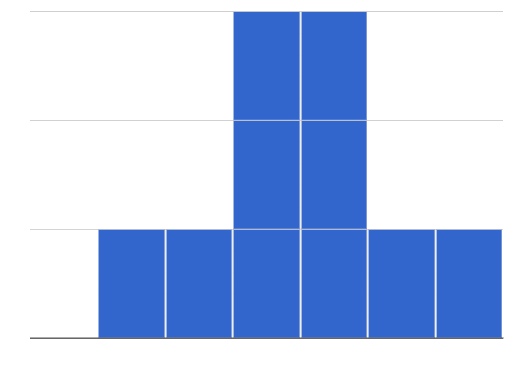
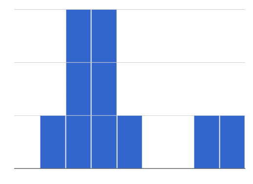

To best understand histograms, it’s helpful to contrast them first with bar charts.
Bar charts show the number of rows belonging to a given category. The more rows in each category, the taller the bar.
-
Bar charts provide a visual representation of the frequency of values in a categorical column.
-
There’s no strict numerical way to order these bars, but sometimes there’s an order that makes sense. For example, bars for the sales of different t-shirt sizes might be presented in order of smallest to largest shirt.
Histograms show the number of rows that fall within certain intervals, or “bins”, on a horizontal axis. The more rows that fall within a particular “bin”, the taller the bar.
-
Histograms provide a visual representation of the frequencies (or relative frequencies) of values in a quantitative column.
-
Quantitative data can always be ordered, so the bars of a histogram always progress from smallest (on the left) to largest (on the right).
-
When dealing with histograms, it’s important to select a good bin size. If the bins are too small or too large, it is difficult to see the shape of the dataset. Choosing a good bin size can take some trial and error!
The shape of a dataset tells us which values are more or less common.
-

🖼Show imageIn a symmetric dataset, values are just as likely to occur a certain distance above the mean as below the mean. Each side of a symmetric distribution looks almost like a mirror-image of the other. -
Some extreme values may be far greater or far lower than the other values in a dataset. These extreme values are called outliers.
-
 🖼Show imageA dataset that is skewed left has a few values that are unusually low. The histogram for a skewed left dataset has a few data points that are stretched out to the left (lower) end of the x-axis.
🖼Show imageA dataset that is skewed left has a few values that are unusually low. The histogram for a skewed left dataset has a few data points that are stretched out to the left (lower) end of the x-axis. -

🖼Show imageA dataset that is skewed right has a few values that are unusually high. The histogram for a skewed right dataset has a few data points that are stretched out to the right (higher) end of the x-axis. -
One way to visualize the difference between a histogram of data that is skewed left or skewed right is to think about the lengths of our toes on our left and right feet. Much like the bar lengths of a histogram that is "skewed left", our left feet have smaller toes on the left and a bigger toe on the right. Our right feet have the big toe on the left and smaller toes on the right, more closely resembling the shape of a histogram of "skewed right" data.
{kind=link}
{kind=link}
These materials were developed partly through support of the National Science Foundation,
(awards 1042210, 1535276, 1648684, and 1738598).  Bootstrap by the Bootstrap Community is licensed under a Creative Commons 4.0 Unported License. This license does not grant permission to run training or professional development. Offering training or professional development with materials substantially derived from Bootstrap must be approved in writing by a Bootstrap Director. Permissions beyond the scope of this license, such as to run training, may be available by contacting contact@BootstrapWorld.org.
Bootstrap by the Bootstrap Community is licensed under a Creative Commons 4.0 Unported License. This license does not grant permission to run training or professional development. Offering training or professional development with materials substantially derived from Bootstrap must be approved in writing by a Bootstrap Director. Permissions beyond the scope of this license, such as to run training, may be available by contacting contact@BootstrapWorld.org.